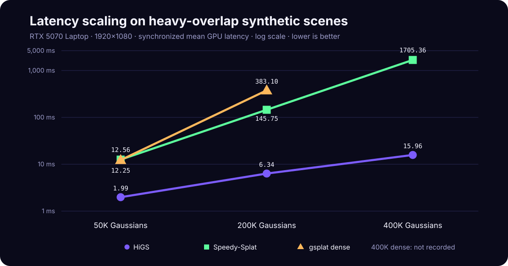

Quality-gated comparison of CUDA rasterizers with identical scene tensors, corrected cameras, synchronized GPU timing, and reproducible reports.
★ RTX 5070 Laptop · 400K Gaussians · 1920×1080
| Parameter | Value |
|---|---|
| Warmup / measured frames | Recorded per result; headline runs use synchronized per-frame samples |
| GPU Clock Lock | No (Windows WDDM laptop) |
| CUDA Synchronization | After every measured frame to prevent deep WDDM queues |
| Timing Method | CUDA start/end events; wall latency exported separately |
| Reported Metrics | Mean, median, percentiles, FPS, end-to-end latency, and peak VRAM |
Generated-scene results must not be generalized to all trained scenes.
All renderers use identical camera paths for fair FPS comparison
| Category | Metrics |
|---|---|
| Runtime | Mean / Median / P1 / P5 / P95 / P99 FPS & latency |
| Stability | Jitter (CV%), min/max/std latency |
| Memory | Peak VRAM, average VRAM |
| Loading | Scene load time, parse time, file size |
| Quality | PSNR, SSIM, LPIPS (offline validation) |
The verified fastest path is gsplat HiGS. It reduces the view-dependent overdraw and tile-list tails observed in Speedy-Splat and dense gsplat:
| Optimization | Mechanism | Observed trade-off |
|---|---|---|
| Hierarchical partitioning | Coarse macro-tiles plus fine raster tiles | Shorter, better-balanced work lists |
| Persistent packed scene | Activation and workspace setup outside timing | Inference-only path with fp16 internals |
| Adaptive tile size | Tile16 below 300K; tile8 at 400K locally | Threshold is workload-specific |
| SH32 packing | Trades decode work for lower bandwidth | Useful for high-density tails, slower at 50K |
See docs/optimization_analysis.md for measured ablations and future combinations with TC-GS, Local-GS, and TemporalGS.
| Scene | Renderer | GPU Mean (ms) | FPS | P99 (ms) | VRAM |
|---|---|---|---|---|---|
| 50K | HiGS tile16 | 1.99 | 502.7 | 2.45 | 147 MB |
| 50K | gsplat dense | 12.25 | 81.6 | 13.76 | 368 MB |
| 50K | Speedy-Splat | 12.56 | 79.6 | 13.82 | 584 MB |
| 200K | HiGS tile16 | 6.34 | 157.8 | 7.23 | 391 MB |
| 400K | HiGS tile8 | 15.96 | 62.7 | 23.22 | 1057 MB |
| Workload | Selected configuration | Reason |
|---|---|---|
| 50K | tile16, uncompressed SH | Lower partition overhead; SH decode is not amortized |
| 200K | tile16, uncompressed SH | Still scheduling-dominated in the measured scene |
| 400K | tile8 + SH32 | Finer work balance and lower SH bandwidth |
Quality-gated generated-scene results at 1920x1080:
| Scene | Renderer | FPS | Median (ms) | Minimum PSNR vs dense |
|---|---|---|---|---|
| 50K synthetic | HiGS tile16 | 502.7 | 1.9 | 59.37 dB |
| 200K synthetic | HiGS tile16 | 157.8 | 6.3 | 58.80 dB |
| 400K synthetic | HiGS tile8 | 62.7 | 15.8 | 59.45 dB |
| Real trained scenes | Pending | TBD | TBD | TBD |
TC-GS is paper-only here because no official source was located; it is not represented by another renderer.
Ranked by mean synchronized GPU FPS within the same scene and protocol.
| Renderer | FPS | GPU Mean (ms) | P99 (ms) | Scene | GPU |
|---|---|---|---|---|---|
| HiGS tile16 | 502.7 | 1.99 | 2.45 | 50K synth | RTX 5070 Laptop |
| HiGS tile16 | 157.8 | 6.34 | 7.23 | 200K synth | RTX 5070 Laptop |
| HiGS tile8 | 62.7 | 15.96 | 23.22 | 400K synth | RTX 5070 Laptop |
# Validate the CPU-safe core
python -m pip install -r requirements-test.txt
python -m unittest discover -s tests -v
# After installing CUDA-enabled PyTorch, run gsplat
python -m pip install numpy gsplat
python src/scripts/generate_scene.py --gaussians 50000 --output data/scene.ply
python src/run_benchmark.py --scene data/scene.ply --camera-path circle --renderers gsplat --frames 100 --warmup 30 --repeats 3
# Full report: results/benchmark_report.html